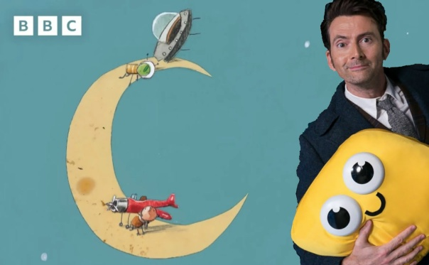

Эра Четырнадцатого Доктора
<<< НАЗАД ||| Доктор Кто: Сказка на ночь ||| ДАЛЬШЕ >>>
Субтитры: Русские (машинные) или Английские

Doctor Who: The Bedtime Story (TV story)
эпизод для передачи «CBeebies: Истории на ночь»
24 ноября 2023
Формат: 5-минутный эпизод
| Варианты озвучек: | * отсутствуют |
|---|---|
| Скачивание и просмотр: |
В нём снялся Дэвид Теннант в костюме и образе Четырнадцатого Доктора, а не в своём собственном; а история, которую он читал, называлась «Путь домой», написанная и проиллюстрированная Оливером Джефферсом.

